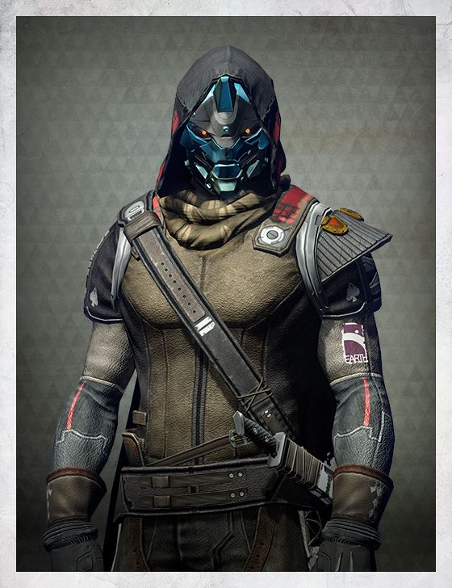
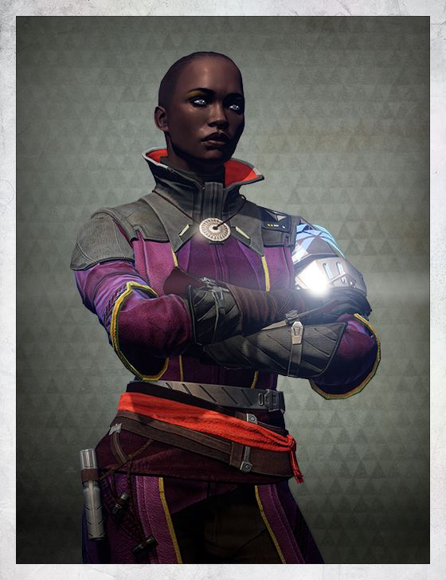
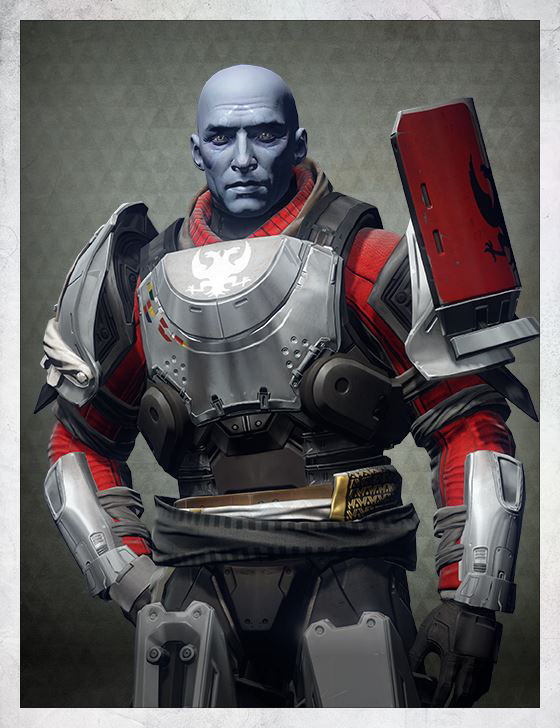
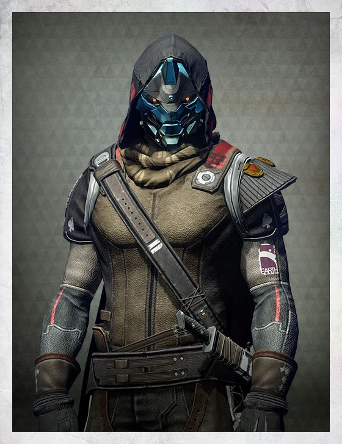
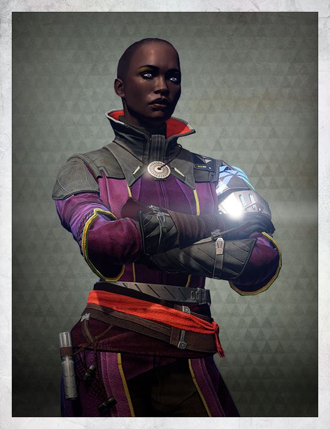
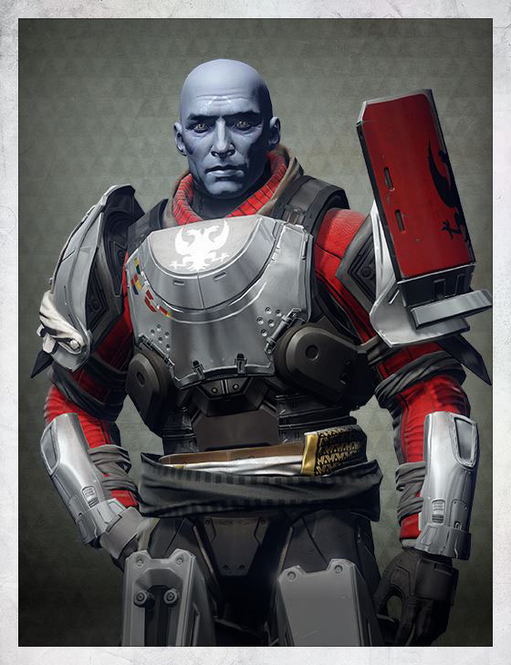

The Allies of the Guardians are those characters that will be involved in the aid for a better tomorrow, for a brand new Golden Age. They'll help the Guardians as much as they can with everything they would need, from any advice to even reward them with powerfull weapons and/or Armor
| The Traveler  |
Tower Allies  |
|---|---|
| City Factions  |
The Exo Stranger  |
The Queen |
Rasputin |
Osiris |
The Iron Lords  |
The table on the right contains every other Grimoire Card that are contained in the Allies Category.
Each one contains large texts and information we'll try to describe here.
Everything changed with the coming of the Traveler.
It gave us gifts that transformed the solar system and the nature of human life. It ushered in the Golden Age, a time of miracles. But it never shared its deepest secrets.
Where did the Traveler come from? Why did it offer us so much? Did it know it was being hunted across the stars? And why, when the Darkness came, did it choose to stay and fight for us?
Now the Traveler hangs, silent, above humanity's final sanctuary. It may be healing. It may be dying. It gave everything it had to save us. And now its power lies with us, its Guardians.
 





There are many allies characters that will help out Guardians in their own adventure. The featured ones above the other are: Commander Zavala, Ikora Rey, Cayde-6 and Lord Shaxx.
Commander Zavala is in charge about every other Titan Guardian, he's his mentor and commander
Ikora Rey is in charge about every other Warlock Guardian, she's his mentor and teacher about the History of the Traveler and The Darkness
Cayde-6 is in charge about every other Hunter Guardian, he's his.... mentor? and... friend?
Lord Shaxx is in charge The Crucible (An activity in which Guardians fight against other Guardians in other to achieve power and skills)
There are 3 Factions, every one with their own goals and visions about how the Future of The Last City must be.
While the origins of the Future War Cult are greatly debated, their mark has been found on ancient chambers and encampments throughout the system, dating them back to the late Golden Age. Though their secrets are vast, they have proven indispensable in our struggle against the Darkness, earning them power and respect in the City Consensus and among Guardians.

Dead Orbit's theology has developed from mere fatalism into an obsession with worlds beyond Earth. Now their focus is on the building of a starfaring fleet, cobbled together from the ashes of our past and the spoils of war.

The New Monarchy rose from the ashes of the Faction Wars with a simple, inclusive guiding tenet: "Together we will rise."
Leery of the fragile state of the City's politics, the New Monarchy maintains a watchful eye on the Speaker, the Consensus, and the Vanguard, seeking the leadership that will properly reign over the City and return our civilization to its Golden Age splendor. If that leadership cannot be found, then it must be created.

Stories of an Exo who walks in the Darkness without a Ghost have long haunted the Tower. Legends say this anomaly dissolves in and out of the world, intangible and elusive, as if she is a visitor from somewhere beyond.
Some believe she's the last of an ancient Exo squadron, fighting a long-forgotten war. Others dismiss her as a hallucination caused by exposure to Vex technology. But there are those who maintain that her intervention saved their lives - or averted unspeakable catastrophes.

The Queen of the Awoken is as much an enigma as the Reef she rules. It is said that she won her crown through ruthlessness, and that she stands as master of the Fallen House of Wolves in place of their defeated Kell.
The City's rise spells an end to the Reef's age of isolation. The Queen will surely look to this new era as an opportunity. And the City, in turn, must look to her. The Reefborn Awoken have spent long ages out on the edge of everything, and they may know secrets of terrible weight - the Queen most of all.

The legendary Warminds stood watch over our Golden Age colonies: vigilant intelligences stretched across thousands of warsats and hardened installations. When the Collapse struck, the great Warminds fought and died. Rasputin fell with them.
Or so history believed. But centuries of explorers’ tales spoke of a surviving, elusive Warmind –a myth substantiated when Guardians exploring the old Cosmodrome made positive contact with Rasputin. A single Warmind still lives, diminished but unbroken.

You were a mighty warrior. I watched you at Six Fronts, and heeded the call of Saint-14 to appoint you Vanguard Commander, even when the Concordat claimed to have records proving you were a Golden Age experiment mis-incarnated as a human by an inept Ghost. Saint-14 assured me you were just a man without much patience for obfuscation.

In the first years after the Collapse, a time before the rise of the Vanguard and the Last City, some of the earliest Guardians to be revived chose not to protect the world, but subjugate it. Taking over various parts of the planet, some Guardians became Warlords and injustice reigned, with the rest of the populace living under the tyranny of the various factions. Eventually, Guardians with integrity chose to stand up to their tyrannical brethren and form the Iron Lords. More and more noble Guardians joined the cause until an army hundreds strong was formed and the oppressive warlords were deposed, along with the Fallen who ravaged the Earth. One former Warlord, Lord Felwinter, was swayed by the Iron Lord's message and decided to join their cause.

GET IN TOUCH
Universidad Fidélitas
Calle Siles, 203, San José, San Pedro
©2017 Universidad Fidélitas